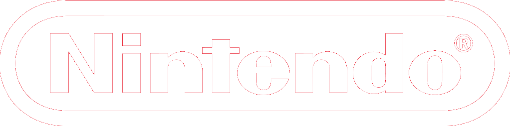

|  | PBA | Mahfudz Naufal Alif 11BA | Consoles | Franchises |
|---|
The most popular Nintendo home consoles:

|

|
||
NES/Famicom |
Nintendo 64 |
GameCube |
Wii |
|---|---|---|---|
| The Nintendo Entertainment System (NES) is an 8-bit third-generation home video game console produced by Nintendo. It was first released in Japan in 1983 as the Family Computer (FC), commonly referred to as Famicom. It was redesigned to become the NES, which was released in American test markets on October 18, 1985, and was soon fully launched in North America and other regions. | The Nintendo 64 (N64) is a home video game console developed by Nintendo. It was released on June 23, 1996, in Japan; on September 29, 1996, in North America; and on March 1, 1997, in Europe and Australia. The successor to the Super Nintendo Entertainment System, it was the last major home console to use cartridges as its primary storage format until the Nintendo Switch in 2017. It competed primarily with the Sony PlayStation and the Sega Saturn. |
The GameCube is a home video game console developed and marketed by Nintendo. It was released in Japan on 14 September 2001, in North America on 18 November 2001, in Europe on 3 May 2002, and in Australia on 17 May 2002. It is the successor to the Nintendo 64 (N64). As a sixth-generation console, the GameCube primarily competed with the PlayStation 2 and Xbox. | The Wii is a home video game console developed and marketed by Nintendo. It was released on November 19, 2006, in North America and in December 2006 for most other regions of the world. It is Nintendo's fifth major home game console, following the GameCube and is a seventh-generation console alongside Microsoft's Xbox 360 and Sony's PlayStation 3. |
The most popular Nintendo handheld consoles:

|

|
||
Game Boy |
Game Boy Advance |
3DS |
Nintendo Switch |
|---|---|---|---|
The Game Boy is an 8-bit fourth generation handheld game console developed and manufactured by Nintendo. It was first released in Japan on April 21, 1989, in North America later the same year, and in Europe in late 1990. It was designed by the same team that developed the Game & Watch series of handheld electronic games and several Nintendo Entertainment System (NES) games: Satoru Okada, Gunpei Yokoi, and Nintendo Research & Development 1. |
The Game Boy Advance (GBA) is a 32-bit handheld game console developed, manufactured and marketed by Nintendo as the successor to the Game Boy Color. It was released in Japan on March 21, 2001, in North America on June 11, 2001, in the PAL region on June 22, 2001, and in mainland China as iQue Game Boy Advance on June 8, 2004. | The Nintendo 3DS is a foldable handheld game console produced by Nintendo. The console was announced in March 2010 and unveiled at E3 2010 as the successor to the Nintendo DS. The system features backward compatibility with Nintendo DS video games. As an eighth-generation console, its primary competitor was Sony's PlayStation Vita. | The Nintendo Switch is a video game console developed by Nintendo and released worldwide in most regions on March 3, 2017. Released in the middle of the eighth generation of home consoles, the Switch succeeded the Wii U and competes with Microsoft's Xbox One and Sony's PlayStation 4; it has also competed with the ninth-generation consoles, Microsoft's Xbox Series X/S and Sony's PlayStation 5. |
Learn more:
| Back to main page | Nintendo YouTube channel |
|---|